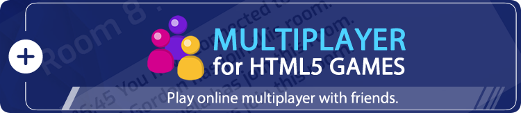

Documentation
Feed Monster
Thank you so much for purchasing our item from codecanyon.
- Version: 1.9
- Author: demonisblack
- Created: 15 July, 2022
- Update: 15 July, 2024
If you have any questions that are beyond the scope of this help file, Please feel free to email via Item Support Page.
Overview
Feed Monster is a HTML5 game where you have to simply score as many points by eating the small dots all around the maze, and you can eat the monsters for points effectively after eating the energizer. Experience endless maze instead of classic mode to challenge yourself for different game play.
The ZIP package contains the game with 1280×768 and 768×1024 resolution that scales proportionally to fit current screen device.
Installation
Follow the steps below to setup your game:
- To install the game just upload folder /game to your hosting web server using FTP or localhost in order to use it on your website. The game won't run locally with some browser like Chrome due to some security mode.
- Below is the folder structure and needs to be uploaded to your website or localhost root directory:
game/assets- Images & audio filesgame/css- Stylesheet filesgame/js- Javacript filesgame/edit.html- Built-in Editor pagegame/editTools.html- Built-in Editor Toolgame/icon.ico- Website icongame/share.jpg- Social share imagegame/share.php- Social share filegame/index.html- Homepage
- You will need a website that runs PHP to make facebook share button work, and make sure to change Facebook Open Graph meta and Twitter meta in index.html, just replace
[GAME_URL]to your game URL.
<!-- for Facebook -->
<meta property="og:image" content="[GAME_URL]/share.jpg" />
<meta property="og:url" content="[GAME_URL]" />
<!-- for Twitter -->
<meta name="twitter:image" content="[GAME_URL]/share.jpg" />
Settings
Follow the steps below to customize your game:
You can easily customize game text and settings in game.js file
//map settings
var mapSettings = {
squareSize:24, //must be even number
monsterSize:5, //must be even number
biscuitSize:2, //biscuit size
pillSize:5, //pill size
design:{
strokeNum:3 //wall size
},
keyboard:{ //keyboard code
left:[37,65],
right:[39,68],
up:[38,87],
down:[40,83],
},
mobileControl:"right", //mobile control position (left, center, right)
userSpeed:2,
ghostSpeed:2,
ghostEatenSpeed:4,
ghostEatableSpeed:1,
countdownTimer:800, //countdown timer
pillTimer:10000, //eaten pill end time
ghostRecoverTimer:5000, //ghost recover time
ghostBlinkTimer:300, //ghost blink timer
collectShowTimer:15000, //collection show timer
lives:3,
score:{
biscuit:10,
pill:50,
ghost:50,
collection:100
},
loop:{ //map loop settings
pillTarget:5, //show pill after 5 row/column
collectionTarget:15, //show collection after 15 row/column
levels:[ //level settings
{
mapSpeed:.5,
userSpeed:2,
ghostSpeed:2,
ghostEatenSpeed:4,
ghostEatableSpeed:1,
scoreTarget:800,
},
{
mapSpeed:1,
userSpeed:2,
ghostSpeed:2,
ghostEatenSpeed:4,
ghostEatableSpeed:1,
scoreTarget:1500,
},
{
mapSpeed:1.5,
userSpeed:3,
ghostSpeed:3,
ghostEatenSpeed:5,
ghostEatableSpeed:2,
scoreTarget:3000,
},
{
mapSpeed:2,
userSpeed:4,
ghostSpeed:4,
ghostEatenSpeed:6,
ghostEatableSpeed:3,
scoreTarget:4000,
},
{
mapSpeed:2.5,
userSpeed:4,
ghostSpeed:4,
ghostEatenSpeed:6,
ghostEatableSpeed:3,
scoreTarget:5000,
},
{
mapSpeed:3,
userSpeed:4,
ghostSpeed:4,
ghostEatenSpeed:6,
ghostEatableSpeed:3,
scoreTarget:6000,
},
]
}
};
//game text display
var textDisplay = {
gameReady:'GET READY!',
gameReadyLevel:'LEVEL [NUMBER]',
gameCountdown:["1","2","3"],
gameOver:'GAME OVER',
gameClear:'LEVEL CLEAR',
gameScore:"SCORE : [NUMBER]PTS",
gameLevel:"LEVEL : [NUMBER]",
exitTitle:'Exit Game',
exitMessage:'Are you sure you want\nto quit game?',
share:'Share your score:',
resultTitle:'GAME OVER',
resultDesc:'[NUMBER]PTS',
}
//Social share, [SCORE] will replace with game score
var shareEnable = true; //toggle share
var shareTitle = 'Highscore on Feed Monster is [SCORE]pts';//social share score title
var shareMessage = '[SCORE]pts is mine new highscore on Feed Monster game! Try it now!'; //social share score message
The sound can be easily disabled to avoid compatibility issues in sound.js file:
var enableDesktopSound = true; //sound for dekstop
var enableMobileSound = true; //sound for mobile and tablet
Themes
You can easily customize themes in theme_settings in game.js file, it store all themes data and below is the explanation of each most important objects:
var theme_settings = [
{
strokeColor:"#2422DC",
biscuitColor:"#fff",
pillColor:"#fff",
gateColor:"#3888D7",
user:"assets/item_theme1_user.png",
ghosts:[
"assets/item_theme1_monster1.png",
"assets/item_theme1_monster2.png",
"assets/item_theme1_monster3.png",
"assets/item_theme1_monster4.png",
"assets/item_theme1_monster5.png",
"assets/item_theme1_monster6.png",
"assets/item_theme1_monster7.png",
],
collection:[
"assets/item_egg.png"
]
}
];
strokeColor- wall colorbiscuitColor- bicsuit colorpillColor- pill colorgateColor- gate coloruser- monster sprite sheet animation imageghosts- ghosts array sprite sheet animation imagecollection- collection array image
Maps
You can easily customize maps in maps_arr in maps.js file, it store all maps data and below is the explanation of each most important objects:
var theme_settings = [
{
map:[
[35,30,30,30,30,30,30,30,30,40,30,30,30,30,30,30,30,30,32],
[31, 2, 2, 2, 2, 2, 2, 2, 2,61, 2, 2, 2, 2, 2, 2, 2, 2,31],
[31, 3,65,62, 2,65,60,62, 2,61, 2,65,60,62, 2,65,62, 3,31],
[31, 2,64,63, 2,64,60,63, 2,75, 2,64,60,63, 2,64,63, 2,31],
[31, 2, 2, 2, 2, 2, 2, 2, 2, 2, 2, 2, 2, 2, 2, 2, 2, 2,31],
[31, 2,76,74, 2,77, 2,76,60,66,60,74, 2,77, 2,76,74, 2,31],
[31, 2, 2, 2, 2,61, 2, 2, 2,61, 2, 2, 2,61, 2, 2, 2, 2,31],
[34,30,30,32, 2,69,60,74, 2,75, 2,76,60,67, 2,35,30,30,33],
[ 1, 1, 1,31, 2,61, 2, 2, 2, 2, 2, 2, 2,61, 2,31, 1, 1, 1],
[30,30,30,33, 2,75, 2,35,30, 5,30,32, 2,75, 2,34,30,30,30],
[ 1, 1, 1, 1, 2, 2, 2,31, 1, 1, 1,31, 2, 2, 2, 1, 1, 1, 1],
[30,30,30,32, 2,77, 2,34,30,30,30,33, 2,77, 2,35,30,30,30],
[ 1, 1, 1,31, 2,61, 2, 2, 2, 2, 2, 2, 2,61, 2,31, 1, 1, 1],
[35,30,30,33, 2,75, 2,76,60,66,60,74, 2,75, 2,34,30,30,32],
[31, 2, 2, 2, 2, 2, 2, 2, 2,61, 2, 2, 2, 2, 2, 2, 2, 2,31],
[31, 2,76,62, 2,76,60,74, 2,75, 2,76,60,74, 2,65,74, 2,31],
[31, 3, 2,61, 2, 2, 2, 2, 2, 2, 2, 2, 2, 2, 2,61, 2, 3,31],
[43,74, 2,75, 2,77, 2,76,60,66,60,74, 2,77, 2,75, 2,76,41],
[31, 2, 2, 2, 2,61, 2, 2, 2,61, 2, 2, 2,61, 2, 2, 2, 2,31],
[31, 2,76,60,60,68,60,74, 2,75, 2,76,60,68,60,60,74, 2,31],
[31, 2, 2, 2, 2, 2, 2, 2, 2, 2, 2, 2, 2, 2, 2, 2, 2, 2,31],
[34,30,30,30,30,30,30,30,30,30,30,30,30,30,30,30,30,30,33],
],
startDirection:"left",
startPos:[9,16],
ghostPos:[9,8],
ghostStayPos:[
[9,10],
[9,10],
[8,10],
[10,10],
],
multiPos:[
[5,4],
[13,4],
[5,14],
[13,14],
],
multiDirection:["left","right","left","right",],
totalGhosts:[0,1000,5000,10000],
loop:"",
},
];
map- row and column in array, type of block:- 0 = Wall - Single Empty
- 10 = Wall - Single Horizontal
- 11 = Wall - Single Vertical
- 12 = Wall - Single Corner (Left, Bottom)
- 13 = Wall - Single Corner (Left, Top)
- 14 = Wall - Single Corner (Top, Right)
- 15 = Wall - Single Corner (Bottom, Right)
- 16 = Wall - Single T-Junction (Bottom)
- 17 = Wall - Single T-Junction (Right)
- 18 = Wall - Single T-Junction (Top)
- 19 = Wall - Single T-Junction (Left)
- 20 = Wall - Single Cross
- 30 = Wall - Double Horizontal
- 31 = Wall - Double Vertical
- 32 = Wall - Double Corner (Left, Bottom)
- 33 = Wall - Double Corner (Left, Top)
- 34 = Wall - Double Corner (Top, Right)
- 35 = Wall - Double Corner (Bottom, Right)
- 36 = Wall - Double T-Junction (Bottom)
- 37 = Wall - Double T-Junction (Right)
- 38 = Wall - Double T-Junction (Top)
- 39 = Wall - Double T-Junction (Left)
- 40 = Wall - Double T-Junction To Bold (Bottom)
- 41 = Wall - Double T-Junction To Bold (Right)
- 42 = Wall - Double T-Junction To Bold (Top)
- 43 = Wall - Double T-Junction To Bold (Left)
- 44 = Wall - Double End (Right)
- 45 = Wall - Double End (Bottom)
- 46 = Wall - Double End (Left)
- 47 = Wall - Double End (Top)
- 48 = Wall - Double Cross
- 60 = Wall - Bold Double Horizontal
- 61 = Wall - Bold Double Vertical
- 62 = Wall - Bold Double Corner (Left, Bottom)
- 63 = Wall - Bold Double Corner (Left, Top)
- 64 = Wall - Bold Double Corner (Top, Right)
- 65 = Wall - Bold Double Corner (Bottom, Right)
- 66 = Wall - Bold Double T-Junction (Bottom)
- 67 = Wall - Bold Double T-Junction (Right)
- 68 = Wall - Bold Double T-Junction (Top)
- 69 = Wall - Bold Double T-Junction (Left)
- 70 = Wall - Bold Double T-Junction To Nomal (Bottom)
- 71 = Wall - Bold Double T-Junction To Nomal (Right)
- 72 = Wall - Bold Double T-Junction To Nomal (Top)
- 73 = Wall - Bold Double T-Junction To Nomal (Left)
- 74 = Wall - Bold Double End (Right)
- 75 = Wall - Bold Double End (Bottom)
- 76 = Wall - Bold Double End (Left)
- 77 = Wall - Bold Double End (Top)
- 78 = Wall - Bold Double Cross
- 80 = Wall - Round
- 1 = Empty
- 2 = Biscuit
- 3 = Pill
- 4 = Block
- 5 = Gate Horizontal
- 6 = Gate Vertical
startDirection- monster start direction (left, right, up down)startPos- monster start positionghostPos- ghost start positionghostStayPos- ghost stay arra positionmultiPos- multiplayer start position arraymultiDirection- multiplayer start direction array (left, right, up down)totalGhosts- total ghosts and timerloop- map loop (vertical, horizontal)
Note multiPos and multiDirection is used for Multiplayer add-on
Built-in Editor
This is the section where you can edit the map with the tool by running edit.html. The page start with edit tools, click generate button to export the array when you complete editing, replace the new array in maps_arr in maps.js file.
1. Basic Options
- First select the map you want to edit.
- Option to add, remove and sort map.
- This section is to edit map, and also output the new array.
- Build Map - edit map settings
- Test Play - test play your map
- Generate Array - click to generate new Array, copy and replace into
maps_arrinmaps.jsfor new update
2. Edit Map
- Enter row and column to create map size.
- This section is to build wall design and positions:
- Map Design - edit map design
- User and Ghost Position - all start positions
- Map settings, click Update button to update new settings.
3. Map Design
- Follow instructions for shortcude key to build the design.
- Mouse over each block to see which collumn, row and type of Design.
- Select current wall design to replace the block on stage.
4. User and Ghost Position
- Place user and ghost start position.
- Add multiple ghost stay position.
- Place current ghost stay position.
HTML Structure
Structure used to design web pages including HTML structure, CSS Files, Javascript and more...
The page start with the loader wrapper that covering the whole screen in the body. It shows loader progress when calls the function initPreload()
<!-- PERCENT LOADER START-->
<div id="mainLoader"><img src="assets/loader.png" /><br><span>0</span></div>
<!-- PERCENT LOADER END-->
This section is for browser not support page when calls the function checkBrowser(). It shows error message when detect the browser does not support canvas.
<!-- BROWSER NOT SUPPORT START-->
<div id="notSupportHolder">
<div class="notSupport">YOUR BROWSER ISN'T SUPPORTED.<br/>PLEASE UPDATE YOUR BROWSER IN ORDER TO RUN THE GAME</div>
</div>
<!-- BROWSER NOT SUPPORT END-->
Follow by one canvas tag in the body. The game start initiatie by calls the main function of the game initMain().
<!-- CANVAS START-->
<div id="canvasHolder">
<canvas id="gameCanvas" width="1280" height="768"></canvas>
</div>
<!-- CANVAS END-->
CSS Files
We're using two CSS files in this game. The first one is normalize.css a generic reset file. Many browser interpret the default behavior of html elements differently. By using a general reset CSS file, we can work round this. This file also contains some general styling, such as anchor tag colors, font-sizes, etc. Keep in mind, that these values might be overridden somewhere else in the file.
The second file main.css contains all of the specific stylings for the canvas and some hack to be fully compatible with all most popular mobile device.
JavaScript
This game using Javascript files below.
-
jquery.min.js- is a cross-platform JavaScript library designed to simplify the client-side scripting of HTML.
-
detectmobilebrowser.js- is a open source scripts to detect mobile browsers and phones.
-
createjs.min.js- is a suite of modular libraries and tools which work together to create interactive content on open web technologies via HTML5.
-
TweenMax.min.js- is an extremely fast, lightweight, and flexible animation tool that serves as the foundation of the GreenSock Animation Platform (GSAP).
-
easystar-0.4.3.min.js- is an asynchronous A* pathfinding API written in Javascript for use in your HTML5 games and interactive projects.
-
The game have the following js files
init.js- check if browser or device supportloader.js- loader to load all game imagesmain.js- initiate game setup and browser resize functionmobile.js- mobile orientation changecanvas.js- canvas setup and resizesound.js- sound eventedit.js- editor toolmaps.js- maps settingsgame.js- game play and logicsplugins.js- additonal useful plugins
Game Flow
- The
index.htmlfile startinit.jsfor browser detection - If browser is supported, init
loader.jsto start load asserts with loading progress - For mobile the rotate instruction shows when device is in portrait view, detect by
mobile.js - When all asserts contained in /assets folder are loaded, the game start construct
canvas.jsfrommain.jsthats shows game menu - If user click startbutton in game menu, maps and theme selection will show
- If user click select button, the game will start with
game.js - Classic mode:
- There are total 3 lives to play, game will restart when ghost eat user, game will over when 0 lives
- User must score as many points by eating the small dots all around the maze
- User can eat the monster after eating the energizer, energizer effect will disapper in time
- Collect collection win score more points
- User will reach next level when all dots and energizer are complete
- Loop mode:
- The map will keep moving depend on direction, user will die if didn't stay in the map
- User must score as many points by eating the small dots all around the maze
- User can eat the monster after eating the energizer, energizer effect will disapper in time
- Collect collection win score more points
- User will reach next level after certain score, and the speed will increase
- If user Feed Monster of coloured disks (horizontal, vertical, or diagonal), user will score.
- If time is up, game result will shows
- If user click the main button in game result, it will go to menu
Game Functions
The most important functions used for page.
- checkBrowser() This function is runs for browser detection
- checkMobileEvent() This function runs for mobile event
The most important functions used for game.
- initMain() This function build canvas
- startGame() This function start gameplay
- updateGame() This function manages the game loop
- stopGame() This function stop gameplay
- saveGame() This function save game score
Game Assets
You can edit the design files and easily reskin the game graphics.
The game contain /design folder which include following:
feedmonster_1280x768.psd- with layer folders below- Option
- Result
- Gameplay
- Landing
The folder /game/assets contains all the images of the game that can be replaced. Is better to have the same size of the old ones if you want to reskin the game graphic without coding.
Compatibility
This game is build for Desktop browsers that support HTML5 canvas. Any mobile/tablet should work in landscape and portrait view, but they are not officially supported.
Add-ons
The add-on is an additional feature added to the game and it requires the base game in order to work, below are the add-ons that are compatible with this game:

This game is compatible with Scoreboard for HTML5 Games, it is a add-ons page where user can submit score and view top 10 leaderboard. You can get it here.

This game is compatible with Multiplayer add-on, it is a add-ons page where user can join and play with other online players. You can get it here.
*Play up to maximum 4 players with multiplayer add-on.Source & Credits
Fonts:
- Upheaval from file Ænigma
Images:
- N/A
Sounds:
- Pacman Is Dead from file plasterbrain
- 8 bit Death sound from file MentosLat
- Retro video game sfx - Fail from file OwlStorm
- 8-Bit Arcade Video Game Start Sound Effect, Gun Reload and Jump !! from file FartBiscuit1700
- success_02.wav from file Kenneth_Cooney
- l_m_fx_pacman.aiff from file kkz
- 8-bit Beeping Noise from file studiolittleman
- 8BIT SAMPLES from file PolyDroidZ
- arcade drops from file soramoosic
- Waiting.wav from file SoundSnatcher_
- Coin Jump from file Jerimee
Support
If this documentation doesn't answer your questions, you can send us email via Item Support Page
Here you can find plugin & other documentation that support this game.
- Wordpress Site - By using Scoreboard for HTML5 Games plugin, you can embed HTML5 game into WordPress post or page. Get the Plugin
- Ad Placeholder - Help simulate ads on HTML5 Games, you can integrate and display static and takeover ads through different Ads Serving Platform. Documentation
- Instant Games – Facebook - Guide you through integrating Facebook Instant Games API in our HTML5 Games. Documentation
Don’t forget to Rate this game
Go to your Codecanyon Profile > Downloads Tab > & then You can Rate & Review for our game.
Thank You.
Changelog
See what's new added, changed, fixed, improved or updated in the latest versions.
Version 1.9
- Improved multiplayer script
Version 1.8
- Fixed scoreboard issue
Version 1.7
- Prevent iframe scrolling
Version 1.6
- Fixed score issue
Version 1.5
- Improved multiplayer script
Version 1.4
- Updated sound function
- Added music button
Version 1.3
- Added on-screen control
- Fixed fullscreen issue
Version 1.2
- Fixed map loop issue
Version 1.1
- Fixed canvas issue
Version 1.0
Initial Release